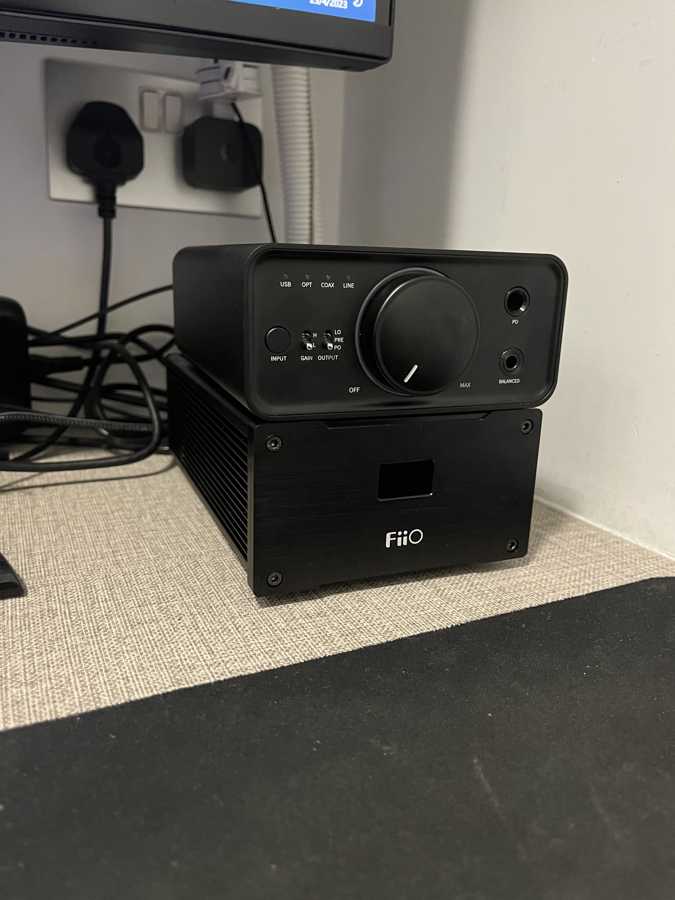

FiiO® K7


The K7 is built around two AK4493SEQ DACs from AKM, which is the new & updated version of AKM’s critically acclaimed DAC chipset, the AK4493. The K7 uses THX 788+ amplifier modules just like the much pricier K9 Pro ESS we reviewed a while back and features a fully balanced architecture. The volume control is done with two pieces of NJU72315 for each channel and FiiO has used plenty of LDOs to filter unwanted noise. The K7 does not come with an integrated PSU / SMPS inside the chassis. The power is supplied through a small, DC 12V/2A adapter, similar to K5Pro.
https://www.fiio.com/k7